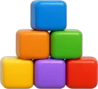
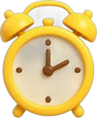
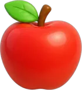
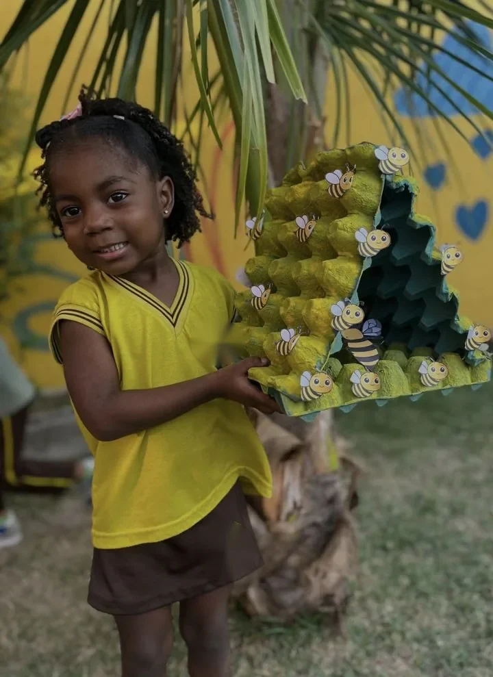
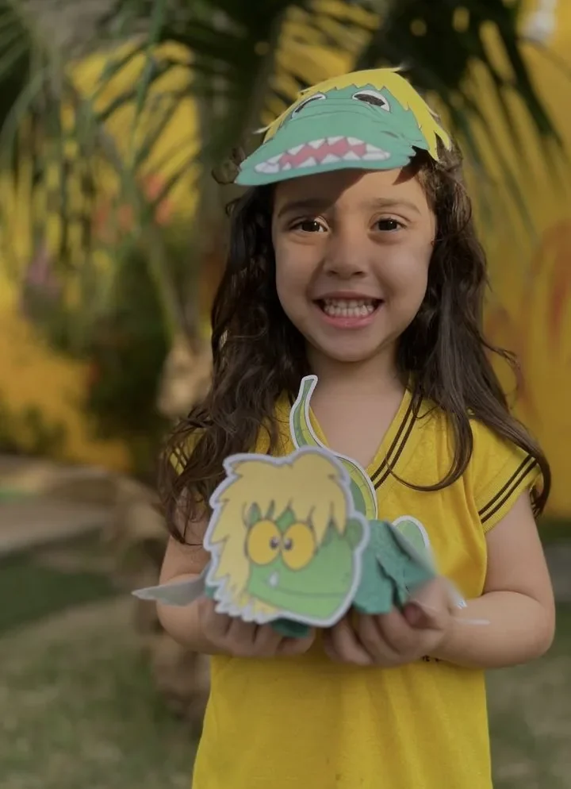
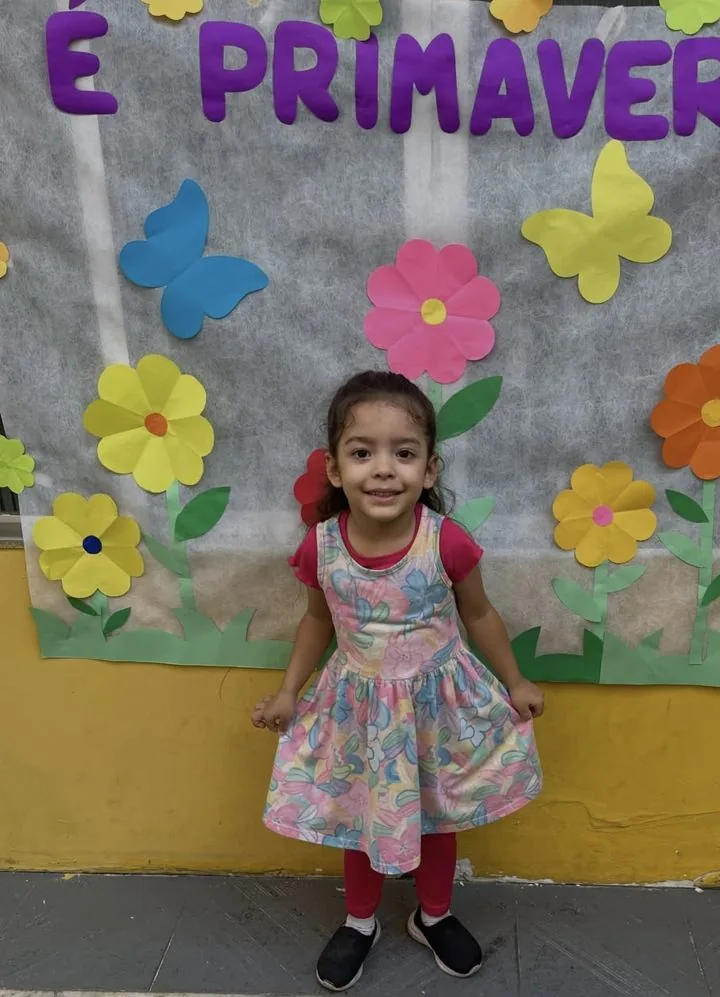
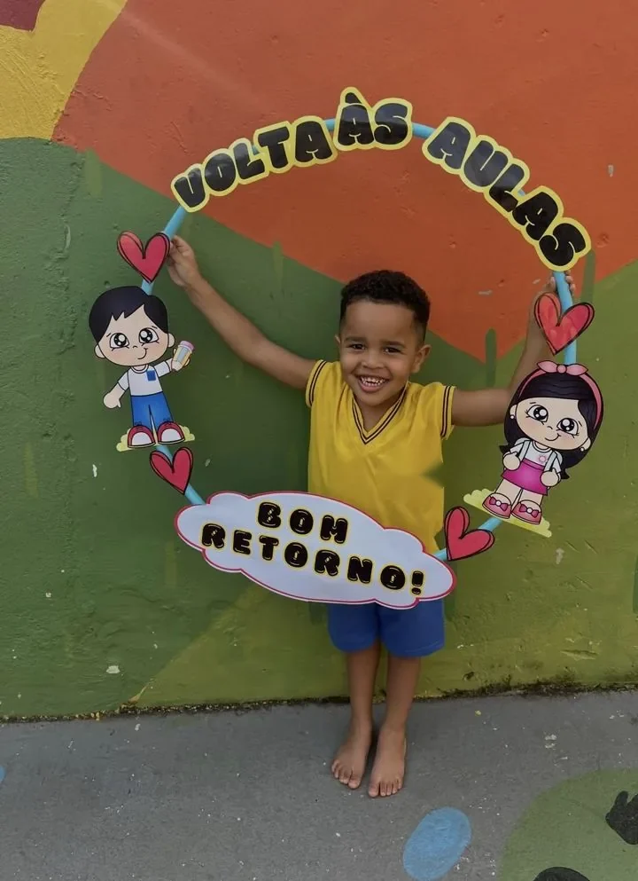

Atendimento de perto
Turmas acompanhadas de perto, com atenção às necessidades de cada criança.
Berçário, Maternal e Pré-escola com cuidado de perto e muita brincadeira.
Na escola {{nome_curto}}, cada criança é acolhida pelo nome, acompanhada no seu tempo e convidada a descobrir o mundo brincando. A família participa de tudo, todos os dias.
{{nota}}no Google · {{avaliacoes}} avaliações
Conheça os espaços, a rotina e a equipe. Preencha e confirme pelo WhatsApp.
Toque no botão abaixo para enviar seus dados para a escola pelo WhatsApp e combinar o melhor dia.
Enviar pelo WhatsApp


A escola {{nome_curto}} parte de uma ideia simples: cuidar de cada criança como a família cuidaria, e ensinar com a mesma dedicação.
Aqui a rotina é previsível e acolhedora, a comunicação com os pais é diária e cada conquista, do primeiro passo à primeira palavra escrita, é celebrada junto.
Crescer com raiz forte, curiosidade e muita cor: é isso que desejamos para cada criança que passa por aqui.
Aprender, brincar, crescer.


A criança participa ativamente do próprio aprendizado, a partir de experiências, brincadeiras e projetos pensados para cada idade.
As atividades seguem a BNCC da Educação Infantil, equilibrando desenvolvimento cognitivo, emocional, motor e social.
Vínculo seguro com a equipe é o ponto de partida para qualquer aprendizado.
Horários previsíveis trazem segurança e ajudam a criança a ganhar autonomia.
Brincar é a forma mais natural de a criança explorar, criar e resolver problemas.
Escutamos a criança, nomeamos sentimentos e conversamos com calma.
Turmas acompanhadas de perto, com atenção às necessidades de cada criança.
Os pais recebem notícias da rotina: alimentação, sono, atividades e conquistas do dia.
Cardápio equilibrado e adequado a cada faixa etária, com introdução alimentar acompanhada.
Formatos de horário para atender rotinas de trabalho diferentes.
Cada criança tem seu tempo. A adaptação acontece aos poucos, com a família por perto.
Volta às aulas, Festa Junina, Folclore, Dia das Famílias e Primavera viram projetos com a turma.
Empatia, convivência e expressão dos sentimentos fazem parte da rotina, não de uma aula isolada.
Uma escola próxima de casa, com uma equipe que conhece cada família pelo nome.
Acolhimento, vínculo e cuidado individual. Estímulos sensoriais, música e movimento acompanham o bebê na descoberta do corpo e do espaço, com atenção especial ao sono, à alimentação e à rotina combinada com a família.
A linguagem ganha força e a autonomia aparece em cada gesto. Brincadeiras dirigidas, histórias, artes e convivência em grupo desenvolvem coordenação, comunicação e independência no dia a dia.
A criança investiga, pergunta e expressa ideias. Projetos, escrita espontânea, matemática brincando e múltiplas linguagens preparam com carinho a passagem para o Ensino Fundamental.
Ambientes coloridos, seguros e organizados para que a criança explore com liberdade e a família fique tranquila.
Conhecer a escola

A avaliação na Educação Infantil é feita observando a criança no dia a dia: como brinca, se comunica, se relaciona e resolve desafios.
Família e escola caminham juntas. Por isso mantemos comunicação constante sobre a rotina, os combinados e as novidades de cada criança.
Festas, apresentações e datas especiais trazem os pais para dentro da escola e fortalecem esse vínculo.
Entrada e saída acompanhadas, ambientes adaptados para crianças pequenas e uma equipe atenta em cada momento da rotina. Qualquer novidade sobre saúde ou bem-estar da criança é comunicada à família na hora.
Cada data comemorativa vira um projeto com a turma, com decoração, música, artes e muita participação das famílias.
Encaixes, blocos e desafios que desenvolvem o raciocínio.
Pintura, colagem, modelagem e teatro de fantoches.
Experiências com plantas, bichos e o cuidado com o ambiente.
Rodas de leitura que aproximam a criança dos livros.
Refeições em grupo que ensinam hábitos e autonomia.
Momento de pausa respeitando o ritmo de cada criança.
Integral ou parcial: a gente conversa com você para encontrar o formato que funciona melhor para a sua criança, com o mesmo cuidado e a mesma equipe de confiança o dia inteiro.
Os primeiros anos são os mais importantes da formação de uma criança. Escolher a creche é escolher quem vai estar ao lado do seu filho nesse começo.
Mais do que comparar espaço ou atividades, vale encontrar uma escola que compartilhe os seus valores, ofereça segurança à criança e tranquilidade à família.
Não encontrou o que procura? Fale com a gente pelo WhatsApp.
Berçário, Maternal e Pré-escola. Na visita apresentamos a faixa etária de cada turma e as vagas disponíveis.
Trabalhamos com período integral e parcial. Funcionamento: {{horario}}. Os detalhes de cada formato são passados pelo WhatsApp.
O cardápio é pensado para a idade de cada criança, incluindo o acompanhamento da introdução alimentar no Berçário.
Enviamos recados diários sobre alimentação, sono, atividades e qualquer novidade importante.
{{endereco_completo}}.
Preencha o formulário no topo da página ou chame no WhatsApp {{whatsapp_fmt}}. Combinamos o melhor dia e horário para você conhecer a escola.
Visite os espaços, conheça a proposta e converse com a equipe que vai fazer parte da rotina do seu filho.
Agendar minha visita